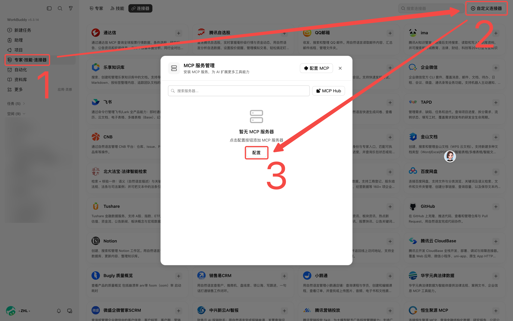
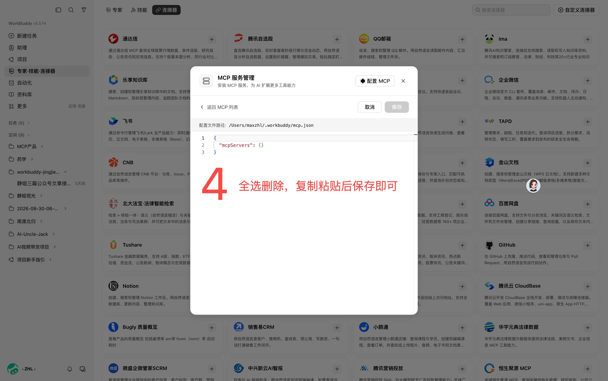
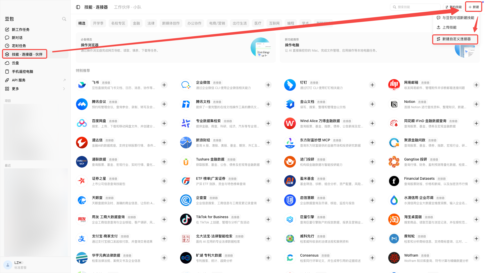
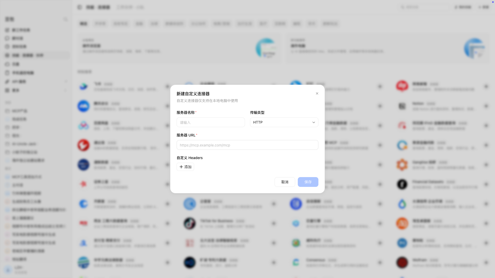
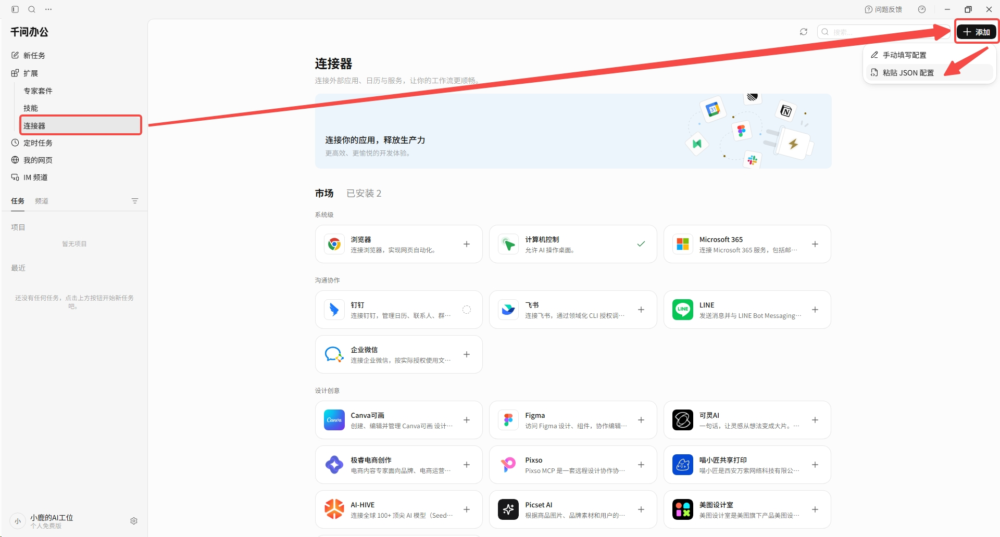
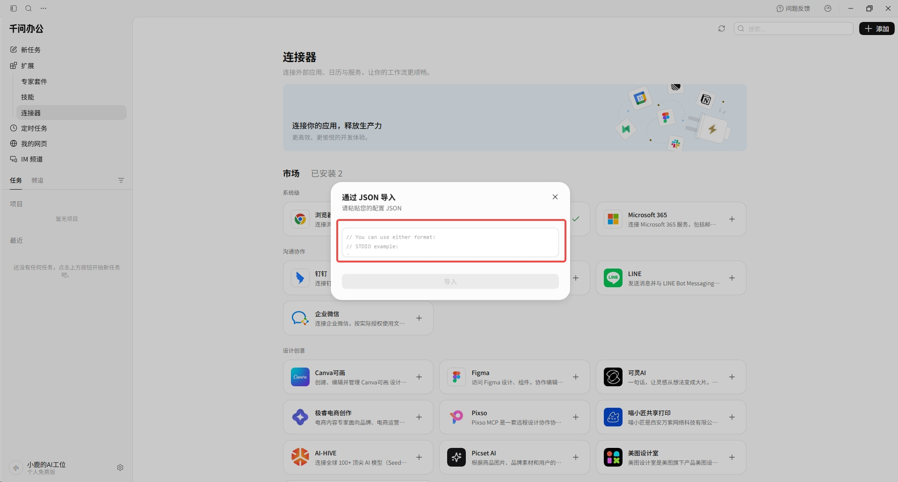

CONNECT YOUR AGENT · 2026.09.10 核查
选你正在用的 AI，
不要从一堆配置里猜答案。
回到兑换页，可以直接复制已经填好私人 key 的接入指令。更重视凭证隐私时，选择手动配置，把 key 只填入客户端连接器设置，不发送到聊天框。
只需要理解这三件事
兑换码是订单交付给你的开通凭证，使用一次后不能再兑换。API key是你自己的岗位库访问凭证，不是大模型 API key。MCP 连接器是让 Agent 真正调用岗位库工具的配置，不是一段普通聊天提示词。
服务器名称：qiuzhao（秋招岗位库） 服务器地址：https://savegems.top/qiuzhao/mcp 传输方式：Streamable HTTP / HTTP Header 名称：Authorization Header 值：Bearer YOUR_API_KEY
这里只显示占位符。兑换页的复制按钮会替换成你的实际 key。Bearer 后保留一个空格，不能把 key 加在 URL 后面。首次接入使用固定 Bearer 凭证，不要误选 OAuth 登录。
回兑换页生成专属指令 →01 / WorkBuddy
步骤：
- 打开 WorkBuddy，进入「连接器」页面
- 点击「添加自定义连接器」
- 选择 Streamable HTTP 类型
- 填写服务器地址：
https://savegems.top/qiuzhao/mcp - 添加 Header：
Authorization: Bearer 你的API Key - 保存并启用，新建任务即可使用
操作截图：


02 / 豆包工作
步骤：
- 打开豆包工作电脑版，点击左侧「技能·连接器·伙伴」
- 点击右上角「新建」→「新建自定义连接器」
- 填写连接器名称：秋招岗位库
- 选择 HTTP 类型，填写服务器地址：
https://savegems.top/qiuzhao/mcp - 添加自定义 Header：
Authorization: Bearer 你的API Key - 保存后，在新工作任务中启用该连接器即可
操作截图：


03 / 千问办公
步骤：
- 打开千问办公，进入「扩展」→「连接器」
- 点击「添加连接器」→「自定义连接器」
- 选择 Streamable HTTP 类型
- 填写服务器地址：
https://savegems.top/qiuzhao/mcp - 添加 Header：
Authorization: Bearer 你的API Key - 保存并开启，新建任务即可使用
操作截图：


04 / Codex
Codex 的 HTTP MCP 可以使用 URL、bearer_token_env_var 或 http_headers。它的配置格式是 TOML，不是普通 MCP JSON。兑换页生成的配置应合并到用户私有配置，不要整份覆盖项目配置。
[mcp_servers.qiuzhao] url = "https://savegems.top/qiuzhao/mcp" bearer_token_env_var = "QIUZHAO_API_KEY"
这是环境变量方式，必须让实际运行 Codex 的进程读取到该变量才生效。仅在某个终端临时设置，不保证桌面应用能够继承。兑换页同时提供已填值的 Header 配置；使用时应保存在私有配置，避免进入代码仓库。
05 / Claude Code
使用远程 HTTP MCP，并设置 Bearer 请求头。通过用户或本地作用域配置，使用 /mcp 核对连接状态。
Claude Code 与普通 Claude 网页／桌面客户端不是同一套配置。
更多客户端 / Hermes、OpenClaw
Hermes Agent：在用户配置中的 mcp_servers 注册 HTTP 服务器及请求头，加载后检查工具即可。
OpenClaw（小龙虾）：在 Settings → MCP 管理中添加，选择 HTTP 类型，填写地址和 Header。
其他客户端：支持 MCP 的客户端均可按通用字段配置，填写服务器地址和 Authorization Header 即可。
什么才叫“接入成功”？
- 客户端完成连接，工具列表中出现
jobs_search、jobs_stats、jobs_detail，名称可能带客户端前缀。 - 只实际调用一次
jobs_search，参数page_size=1，先不加筛选条件。 - 收到真实工具响应，保留返回的岗位 ID、原链接及复核时间；执行成功但零结果、鉴权失败和未调用工具是不同状态。
这次岗位查询消耗 1 次。连接、列工具、兑换页的账号权限校验不消耗岗位调用额度。网页显示“账号有效”不表示 Agent 已装好连接器。
请实际调用秋招岗位库的 jobs_search，参数 page_size=1。 只展示真实返回，保留岗位ID、原链接、复核时间。 没有工具权限或发生错误就如实说明，不凭记忆生成岗位。
凭证与售后
选择“复制带 key 的指令”会将私人凭证放入剪贴板，粘贴到 AI 后可能进入该服务商的对话存储。要求 Agent 不回显，只能减少再次暴露，不能保证删除已经上传的内容。更稳妥的方法是手动把 key 填到客户端的私有连接器设置。
本网站不把 key 写入 localStorage、sessionStorage 或网址，但你主动复制的剪贴板、密码管理器和第三方 Agent 有各自的存储行为。清除本页凭证不等于撤销 key。泄露或丢失时，请通过原购买渠道提供订单凭证联系卖家处理，勿公开发 key。
订阅期内无限次工具调用，不同客户端共用额度。订阅生效后 30 天内有效，到期可续费。当前早鸟价 29.9 元/月（前 10 名），标准价 59.9 元/月。账号或额度问题按真实服务返回处理。